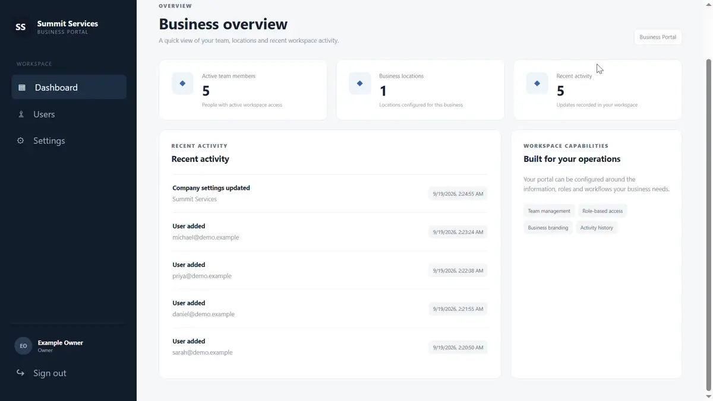
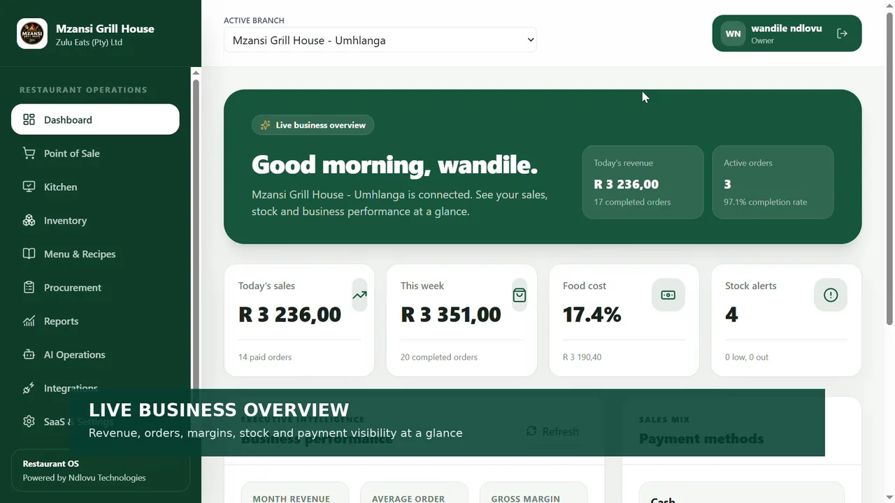
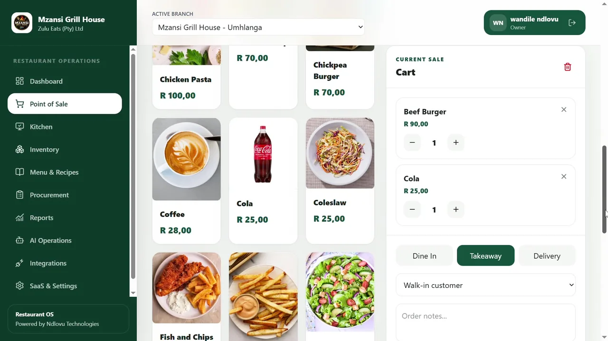
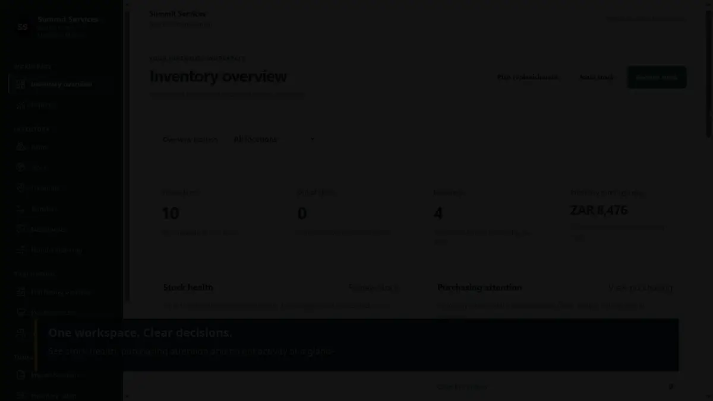
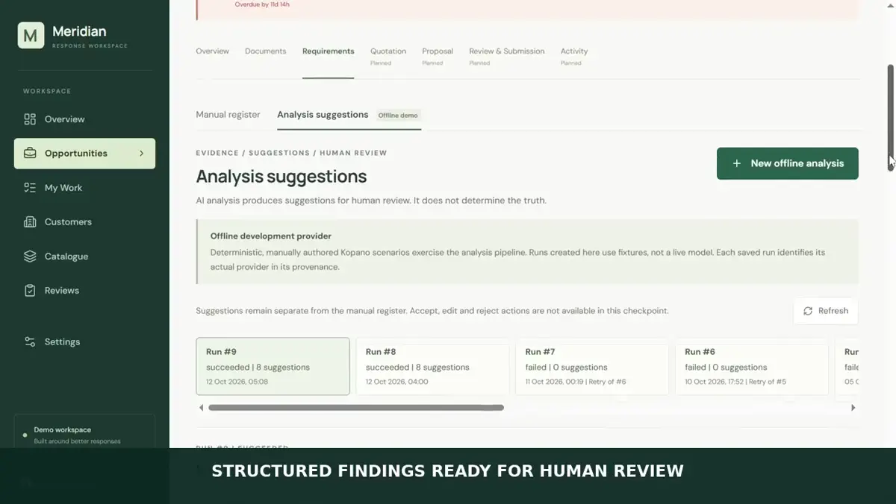

Business application foundation
Business Dashboard & Admin Portal
One administration foundation, designed for more than one business workflow.
Explore the project →I'm a South African software developer with a background in engineering and data analytics. I build web applications and automation systems that translate operational processes into clear, maintainable software.

Restaurant OS brings point of sale, kitchen operations, inventory, procurement and management reporting into one application. Here is a walkthrough of the system and a closer look at how I designed its inventory workflows.

A point-of-sale workspace captured from my recorded application demonstration.
I wanted restaurant staff to work within a connected set of tools rather than manage orders, preparation and stock in separate processes. The walkthrough shows the application; the case study explains the data and workflow decisions behind it.
Stock must not be deducted twice because someone repeated a request. I implemented workflow states, quantity checks, row locking and transaction boundaries for inter-branch transfers. Automated tests cover repeated requests, invalid receipts and company-level access boundaries.
How I approached it →Each application explores a different engineering problem. The case studies explain the decisions behind the interface, with recorded walkthroughs of the working demonstrations.

One administration foundation, designed for more than one business workflow.
Explore the project →
Know what is in stock, why it changed, and where it moved.
Explore the project →
Turn complex source documents into traceable decisions—not unquestioned summaries.
Explore the project →I map the actions, participants and valid state changes before focusing on individual screens. This keeps implementation aligned with the actual work users need to complete.
For business records, I pay attention to authorization, transaction boundaries, validation and what happens when requests are duplicated or fail partway through.
I check both the successful workflow and failure cases such as duplicate requests, invalid transitions and access across company boundaries.
My path into development started with chemical engineering, mathematics and statistics, then extended into data auditing, industrial process work, analytics and Python programming. I became increasingly interested in how software could turn complex operational procedures into reliable digital workflows.
Through Ndlovu Business Technologies, I apply those skills to practical business applications. I am especially interested in backend development, integration work and working alongside experienced engineers on products that people rely on.